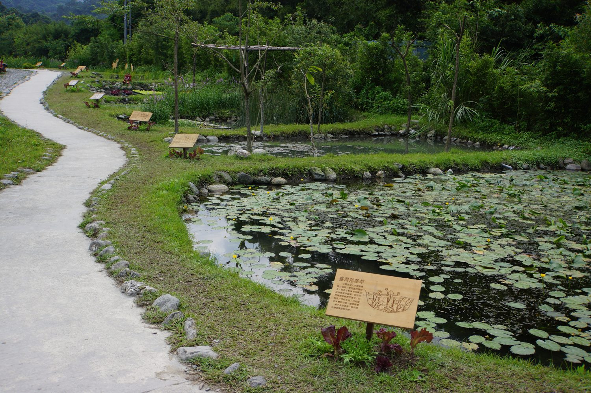
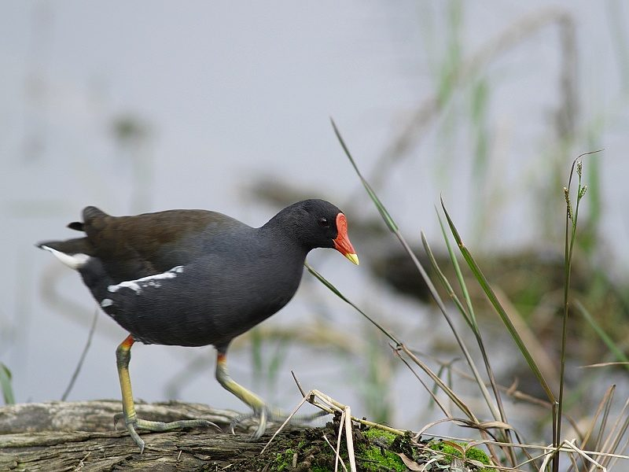
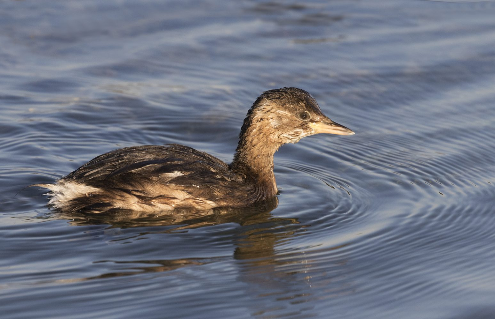
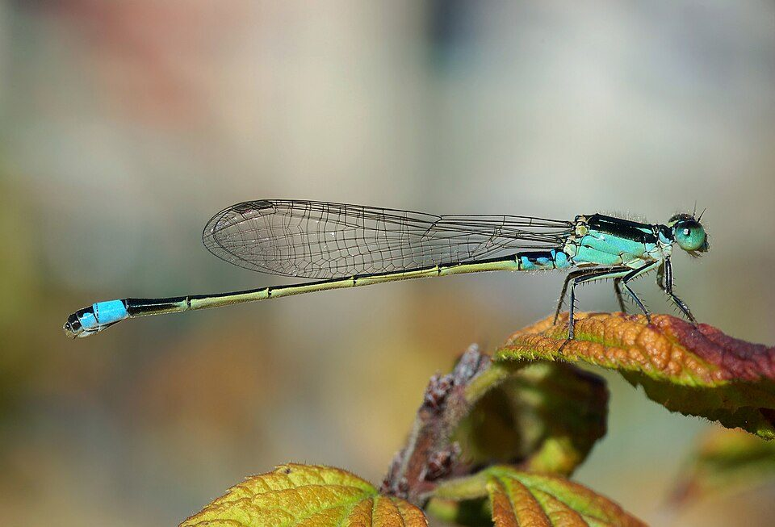
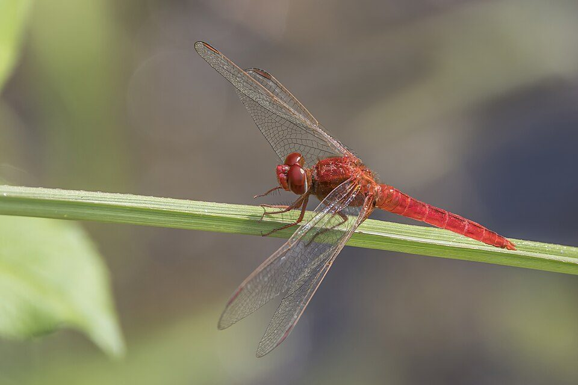

臺灣萍蓬草 / 萍蓬草類
辨識重點是水面浮葉與黃色杯狀花。臺灣族群屬原生水生植物，野外棲地縮減，常被用來討論埤塘保育與原生水草復育。觀察時請不要採摘，只拍照、記錄位置與水深。
浮葉植物原生水草需現地確認以水生植物、水鳥、兩棲類、蜻蜓與豆娘作為環境教育入口，建立可拍照、可辨識、可記錄的生態觀察頁。
以下是適合放進報告的動植物介紹與觀察方法。照片是物種代表照，不代表已在龍潭大池本次調查中確認出現；實際紀錄請以你的現場照片與日期為準。

辨識重點是水面浮葉與黃色杯狀花。臺灣族群屬原生水生植物，野外棲地縮減，常被用來討論埤塘保育與原生水草復育。觀察時請不要採摘，只拍照、記錄位置與水深。
浮葉植物原生水草需現地確認
黑褐色身體、紅色額板與黃色嘴尖明顯，常在植被濃密的池塘、溝渠與濕地邊活動。若看到牠在浮葉植物間行走，表示岸邊隱蔽植被仍有棲地功能。
水鳥岸邊植被
俗稱水避仔，體型小，常潛入水中捕食小魚、水生昆蟲與蝌蚪。觀察時可記錄牠「潛水—浮出」的位置，推測水域是否有足夠食物與安靜水面。
潛水鳥食物鏈
身體細長，停棲時翅膀多合在背上；稚蟲生活在水中，因此常被作為水域環境觀察線索。種類多時，代表微棲地較多，但仍需搭配水色、氣味、垃圾與藻類一起判斷。
水生昆蟲水質線索
埤塘常見風險包括福壽螺啃食水生植物、外來魚類捕食蝌蚪與小魚、岸邊硬鋪面造成棲地單一化、靜止水域優養化導致藻類增加。若現場看到粉紅色卵塊、大片藻華、死魚、油膜或異味，請列入「環境壓力」欄位。